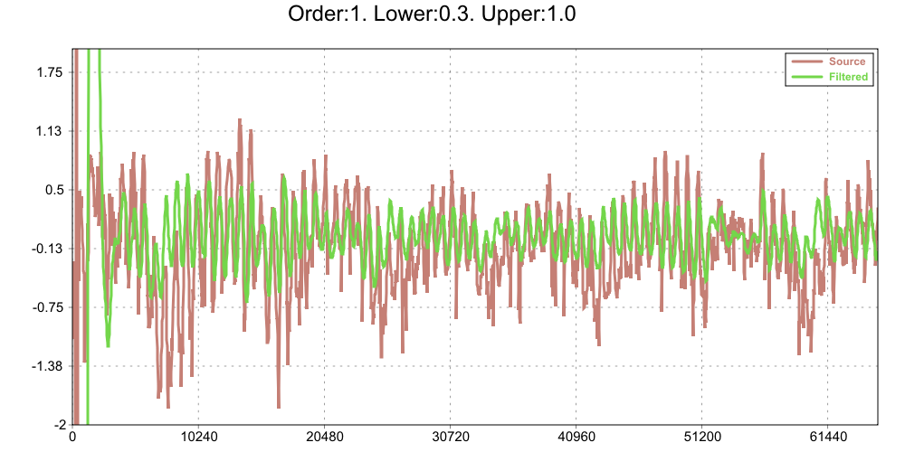
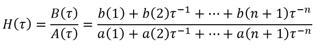

|
The Butterworth IIR filter is a type of signal processing filter designed to have a frequency response as flat as possible in the passband. It is also referred to as a maximally flat magnitude filter. It was first described in 1930 by the British engineer and physicist Stephen Butterworth in his paper entitled "On the Theory of Filter Amplifiers"
These filter functions are templated and can be used with different vector types like U++ Vector<>, Eigen VectorXd and std::vector<>.
Its behaviour is equivalent to Matlab functions filter(), filtfilt() and butter().
Other references:
Digital filter (Wikipedia)
Infinite impulse response
butter function (Matlab)
filter function (Matlab)
filtfilt function (Matlab)

template <class Range> void Butter(int order, typename Range::value_type lcutoff, typename Range::value_type ucutoff, Range &cnum, Range &cden)
Returns the transfer function coefficients (feedforward coefficients cnum (B) and feedback coefficients cden (A)) of a nth-order bandpass digital Butterworth filter with normalized lower cutoff lcutoff and higher cutoff ucutoff frequencies.
For digital filters, the transfer function is expressed in terms of B and A as:

Its results are equivalent to those of the Matlab butter function with lcutoff and ucutoff arguments.
template <class Range> void ButterBandStop(int order, typename Range::value_type lowcutoff, typename Range::value_type upcutoff, Range &cnum, Range &cden)
Returns the transfer function coefficients (feedforward coefficients cnum (B) and feedback coefficients cden (A)) of a nth-order bandstop digital Butterworth filter with normalized lower cutoff lcutoff and higher cutoff ucutoff frequencies.
For digital filters, the transfer function is expressed in terms of B and A as:

Its results are equivalent to those of the Matlab butter function with 'stop' option.
template <class Range> void ButterLowPass(int order, typename Range::value_type cutoff, Range &cnum, Range &cden)
Returns the transfer function coefficients (feedforward coefficients cnum (B) and feedback coefficients cden (A)) of a nth-order low pass digital Butterworth filter with normalized cutoff frequency.
For digital filters, the transfer function is expressed in terms of B and A as:
Its results are equivalent to those of the Matlab butter function with cutoff argument.
template <class Range> void ButterHighPass(int order, typename Range::value_type cutoff, Range &cnum, Range &cden)
Returns the transfer function coefficients (feedforward coefficients cnum (B) and feedback coefficients cden (A)) of a nth-order high pass digital Butterworth filter with normalized cutoff frequency.
For digital filters, the transfer function is expressed in terms of B and A as:

Its results are equivalent to those of the Matlab butter function with 'high' option.
template <class Range> void Filter(const Range &x, const Range &cnum, const Range &cden, Range &filtered)
Filters the input data x using a rational transfer function defined by the numerator feedforward coefficients cnum and denominator feedback coefficients cden.
Its results are equivalent to those of the Matlab filter function.
template <class Range> void Filtfilt(const Range &x, const Range &cnum, const Range &cden, Range &filtered)
Filters without adding time lag the input data x using a rational transfer function defined by the numerator feedforward coefficients cnum and denominator feedback coefficients cden.
It develops a zero-phase filtering by processing the data in the forward and reverse directions. In addition it minimizes start-up and ending transients by matching initial conditions.
Its results are equivalent to those of the Matlab filtfilt function.
|
{kind=link}
{kind=link}
{kind=link}